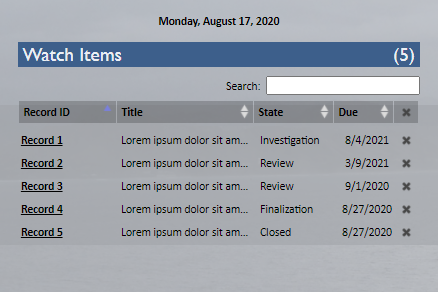

April 2020
Back in September, I created a new feature on the ASP.NET site that lets you watch, or subscribe to, records. To give some context, the site allows you to create records and move them through a complex, multi-step process where different users must review or add content to the record at each stage. The subscription feature is accessible on individual record pages, or from queues and search results where many records may be tabulated together. The follow-up task I've been working on is a creating a central place for users to view and modify their watch items all at once.

This dashboard, as it has been dubbed, displays the most important attributes of your watch items in a small, concise table. I used the DataTables plugin, so you can sort and filter as well. It goes on the left of the site home page, which used to be a relatively empty splash page with a large image and the site name, both of which were safely shifted to the right.